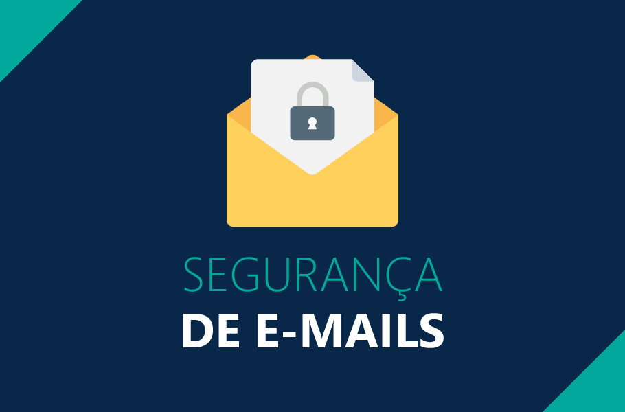

Segurança Online

Aprenda mais sobre VPN
Conexão segura online que protege sua privacidade e dados. Oculta seu IP e permite acessar redes restritas. Ideal para segurança em Wi-Fi público e privacidade online.
Saiba Mais
Aprenda mais sobre AntiVirus
Software que protege seu computador contra vírus, malware e ameaças online. Escaneia e remove arquivos maliciosos, mantendo seu dispositivo seguro. Essencial para proteger sua privacidade e manter seu sistema funcionando sem problemas.
Saiba Mais
Gerenciador de senhas
Aplicativo que armazena e protege suas senhas de forma segura. Gera senhas fortes e únicas para cada conta online, eliminando o risco de usar senhas fracas ou repetidas. Facilita o acesso seguro aos seus serviços online e protege contra ataques de hackers e roubo de identidade.
Saiba Mais
Bloqueador de Anúncios
Muitos anúncios online contêm rastreadores de terceiros, que coletam dados sobre seus hábitos de navegação para fins de marketing e análise. Bloqueadores de anúncios bloqueiam esses rastreadores, ajudando a proteger sua privacidade online. Alguns anúncios online também podem ser veículos para malware, como vírus, spyware e ransomware.
Saiba Mais
Alerta de Phishing: Proteja suas Informações Online
Phishing é uma técnica usada por cibercriminosos para enganar as pessoas e obter informações confidenciais, como senhas e números de cartão de crédito. Eles geralmente enviam emails ou mensagens falsas, fingindo ser de empresas legítimas, e pedem que você clique em links maliciosos ou compartilhe informações pessoais. Esteja atento para não cair nessas armadilhas e proteja sua privacidade online.
Saiba Mais
Segurança em Wi-Fi Público: Proteja sua Privacidade Online!
Ao utilizar redes Wi-Fi públicas, como as encontradas em cafés, aeroportos e hotéis, é essencial proteger sua privacidade. Evite compartilhar informações sensíveis, como senhas e dados bancários. Utilize uma VPN para criptografar sua conexão e evitar acesso não autorizado
Saiba Mais#1 VPN (Rede Virtual Privada)
Usar uma VPN (Rede Virtual Privada) é crucial nos dias de hoje devido à crescente preocupação com a segurança e privacidade online. Uma VPN oferece uma série de benefícios importantes para os usuários da internet. Ela protege a privacidade online ao criptografar o tráfego de internet, impedindo que bisbilhoteiros, como hackers, provedores de serviços de internet (ISPs) e agências governamentais, espiem ou rastreiem a atividade online de um usuário. Além disso, uma VPN oferece segurança em redes Wi-Fi públicas, protegendo os dados contra ameaças de segurança. Permite também contornar restrições geográficas e censura na internet, permitindo o acesso a conteúdo bloqueado em diferentes regiões do mundo. Além disso, uma VPN oferece anonimato online, ocultando o endereço IP real do usuário e garantindo uma conexão segura em redes corporativas. Em resumo, uma VPN é uma ferramenta essencial para proteger a segurança e a privacidade online, garantindo uma experiência de internet mais segura e livre.
Conheça o ProtonVPN.
ProtonVPN oferece uma
versão gratuita que é limitada em recursos, mas ainda oferece criptografia forte e sem registro de
atividades. Ela tem servidores em três países e oferece uma opção de conexão rápida.
#2 Uso de Antivírus e Antimalware
A utilização de antivírus e antimalware desempenha um papel fundamental na proteção da segurança cibernética dos dispositivos. Estes softwares são projetados para identificar, bloquear e remover ameaças potenciais, tais como vírus, trojans, worms e spyware, que podem comprometer a integridade dos dados, roubar informações sensíveis e danificar o sistema operacional. Além disso, os antivírus e antimalware ajudam a prevenir ataques de ransomware, que sequestram arquivos do usuário em troca de resgate. Ao manter esses programas atualizados, os usuários podem fortalecer suas defesas contra ameaças cibernéticas em constante evolução, garantindo assim a segurança e privacidade de suas informações digitais.
Antivirus que recomendamos: AVG
AntiVirus Free.
O AVG oferece proteção contra uma variedade de ameaças cibernéticas,
incluindo vírus, spyware e ransomware, além de ferramentas de otimização do sistema.
Outra opção: Bitdefender Antivirus Free
Edition
Oferece proteção contra malware em tempo real, utilizando tecnologia de nuvem para
identificar e bloquear ameaças, com impacto mínimo no desempenho do sistema.
#3 Senhas Fortes e Gerenciamento de Credenciais
A criação e gerenciamento adequados de senhas são fundamentais para proteger informações confidenciais e garantir a segurança digital. Senhas fortes, compostas por uma combinação de letras, números e caracteres especiais, dificultam que invasores adivinhem ou quebrem a senha através de ataques de força bruta. Além disso, o uso de senhas únicas para cada conta reduz o impacto de violações de segurança em um único serviço. O gerenciamento de senhas por meio de um gerenciador confiável também simplifica o processo e promove melhores práticas de segurança. Conscientizar sobre a importância de criar senhas robustas e únicas, juntamente com o uso de gerenciadores de senhas, é essencial para proteger dados pessoais e profissionais contra ameaças cibernéticas.
Conheça o BitWarder. O seu gerenciador de senhas
confiável.
O Bitwarden é um gerenciador de senhas de código aberto, oferecendo armazenamento seguro de senhas e
informações confidenciais com criptografia de ponta a ponta, acessível em várias plataformas.
#4 Bloqueador de Anúncios
Como o próprio nome já diz, bloqueadores de anúncios são ferramentas que impedem a exibição de anúncios enquanto se navega na internet, além de melhorarem a experiência de navegação, reduzir a distração, acelerar o carregamento das páginas e ajudar a proteger a privacidade bloqueando anúncios e rastreadores de terceiros.
Como bloquear anúncios:
- Usando extensões de navegador: Instale extensões como uBlock Origin ou Adblock Plus no seu navegador. Essas extensões bloqueiam automaticamente a exibição de anúncios enquanto você navega na internet.
- Aplicativos de terceiros: Existem aplicativos de terceiros disponíveis para bloquear anúncios em dispositivos móveis, como Blokada para Android e AdGuard para iOS.
Seguindo essa dica você aumentará sua segurança online reduzindo o risco de exposição a anúncios maliciosos, como os que contêm malware. Também protegerá sua privacidade, evitando que rastreadores de terceiros coletem dados sobre suas atividades na web. A economia de dados e tempo é outro benefício, já que os anúncios consomem largura de banda e podem retardar o carregamento das páginas
#5 Como se proteger de Phishing?
Para se proteger do phishing e proteger suas informações online, aqui estão algumas práticas importantes:
- Esteja Atento aos E-mails Suspeitos: Verifique cuidadosamente os e-mails que solicitam dados pessoais ou financeiros.
- Não Clique em Links Suspeitos: Evite clicar em links de e-mails, mensagens instantâneas ou redes sociais que pareçam suspeitos. Se você não reconhece o remetente é melhor evitar clicar nele.
- Verifique a URL do Site: Antes de inserir informações confidenciais, verifique se a URL é legítima. Certifique-se de que a conexão é segura (https://) e de que o site possui um certificado SSL válido.
- Mantenha o Software Atualizado: Mantenha navegadores da web e aplicativos atualizados com as últimas atualizações de segurança. Isso ajuda a proteger contra vulnerabilidades conhecidas que os golpistas podem explorar.
- Educando-se e Educando Outros: Esteja sempre atualizado sobre os métodos mais recentes de phishing e compartilhe essas informações com amigos, familiares e colegas para ajudá-los a permanecer seguros online.
Ademais, existem várias ferramentas e programas disponíveis para ajudar a proteger contra phishing. Aqui estão alguns dos mais comuns: Antivirus, Navegadores Web com Proteção contra Phishing, Filtros de E-mail, Gerenciadores de Senhas, etc.
#6 Segurança em Wi-fi Público
Quando se trata de segurança em redes Wi-Fi públicas, é essencial estar ciente dos riscos e adotar medidas para proteger seus dados. Redes Wi-Fi públicas são frequentemente alvos de ataques cibernéticos, tornando os usuários vulneráveis a ameaças como ataques de phishing, interceptação de dados e malware. Para se proteger enquanto usa Wi-Fi público, é recomendável:
- Evitar Transações Sensíveis: Evite acessar informações sensíveis, como informações bancárias ou senhas, em redes Wi-Fi públicas. Esses dados podem ser interceptados por hackers.
- Desativar Compartilhamento de Arquivos: Desative o compartilhamento de arquivos quando estiver conectado a uma rede Wi-Fi pública para evitar que outras pessoas acessem seus arquivos pessoais.
- Usar uma VPN: Uma VPN (Rede Virtual Privada) cria um túnel criptografado entre seu dispositivo e a internet, protegendo seus dados contra bisbilhoteiros. Ao usar uma VPN em redes Wi-Fi públicas, seus dados permanecem seguros e privados.
Aqui estão dois exemplos de softwares para desktop e dispositivos móveis que podem ajudar a detectar
ameaças em redes Wi-Fi públicas:
1 -
Wireshark (Desktop)
2 - Fing - Network Tools (Mobile)
Sobre Nós
O Tech Seguro é uma iniciativa dedicada a promover a conscientização e proteção contra ameaças cibernéticas. Nossa missão é capacitar os usuários da internet com o conhecimento e as ferramentas necessárias para navegarem com segurança no mundo digital em constante evolução.
Objetivos
- Educar usuários sobre as principais ameaças cibernéticas e como se proteger contra elas.
- Desenvolver e disponibilizar recursos e ferramentas de segurança online acessíveis a todos os públicos.
- Aprimorar constantemente nossa expertise em segurança cibernética e compartilhá-la de forma acessível com nossos usuários.
Equipe
O Tech Seguro é composto por estudantes de Análise e Desenvolvimento de Sistemas apaixonados por segurança cibernética. Desde desenvolvedores de software até entusiastas de tecnologia, cada membro contribui com suas habilidades únicas para o sucesso do projeto, trazendo perspectivas valiosas e conhecimentos técnicos para aprimorar nossa plataforma de segurança online.
Compromisso com a Segurança
Acreditamos firmemente na importância da segurança cibernética para proteger informações pessoais e garantir uma experiência online segura para todos. Nosso compromisso é fornecer recursos confiáveis e atualizados para ajudar os usuários a protegerem sua privacidade e segurança online, mantendo-se sempre atualizados sobre as últimas ameaças e soluções disponíveis.